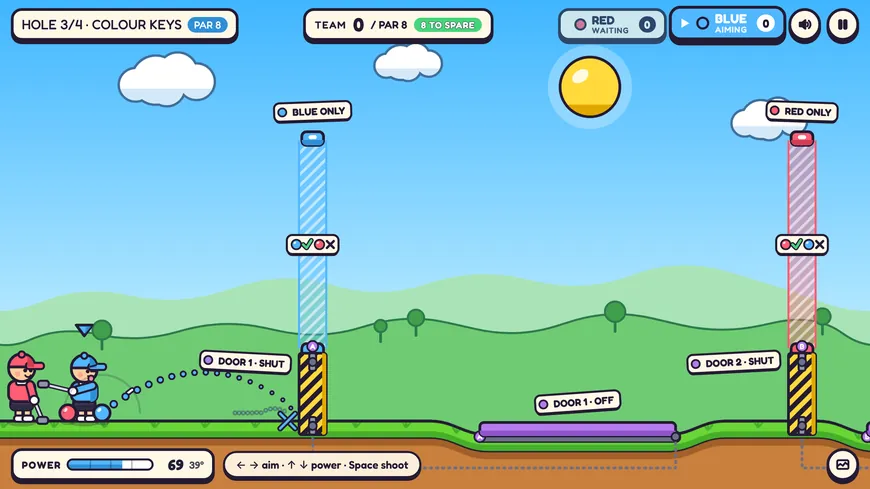

OpenTelemetry release validation
30,000+ telemetry comparisons
Built a validation framework for OpenTelemetry releases, with infrastructure provisioned through AWS CloudFormation, to confirm production compatibility across 23 OS versions.
Backend software engineer, Dallas, Texas
I spent a little over two years at Capital One building observability infrastructure and automation on AWS, and data systems for HR. Now I’m building my own projects, from a prediction-market research pipeline to an online co-op game.
Software Engineer
Two teams in a little over two years: Observability Intelligence, on the company’s monitoring platforms, and People Tech, on HR data systems.
Aug 2023 – Oct 2025
McLean, Virginia
30,000+ telemetry comparisons
Built a validation framework for OpenTelemetry releases, with infrastructure provisioned through AWS CloudFormation, to confirm production compatibility across 23 OS versions.
80% less enterprise monitoring compute
Found misconfigured query intervals that were silently inflating cost, then scripted bulk updates to 60,000+ dashboards through New Relic’s GraphQL API.
1.4M+ production alerts and dashboards
Built a platform-wide change management system to update production alerts and dashboards with zero downtime, enabling safe schema evolution across monitoring systems.
Simplified regional disaster recovery to one-click failover by onboarding EventBridge, Lambda, Batch and load balancers into a centralized failover platform.
Managed the Kubernetes clusters hosting distributed monitoring minions, which continuously tested health endpoints across observability platforms to support availability and catch service failures early.
Built a Lambda-based secrets rotation system that automated cross-account credential distribution through internal secrets management infrastructure, reducing the operational risk of static API tokens.
90% less manual work
Architected an approval-backed deletion platform across Snowflake and internal warehouses, adding validation and auditability for sensitive data workflows.
1M+ requests a day
Maintained and extended an internal HR API: schema changes, caching improvements and cross-team debugging of client integration issues.
Integrated a BERT-based sentiment analysis model for interviewer feedback into a production HR pipeline, delivering a proof of concept for Capital One’s newly released enterprise ML platform.
Software Engineering Extern
Built an internal Slack support chatbot using Amazon Lex, Slack APIs and NLP-based routing to improve onboarding and self-service access to technical documentation.
Sep – Dec 2022
Boston, Massachusetts
Software Developer Intern
Created automated Selenium regression tests for critical workflows under load, supporting 1,000+ concurrent sessions while reducing manual QA effort.
May – Aug 2022
Warsaw, Poland
Personal projects from 2026, built largely by directing AI coding agents (Claude Code and Codex).
Prediction-market research
Can you find Polymarket wallets whose trading shows real forecasting skill, and would following them have paid off after costs? MarketSignalOS collects public wallet history, scores each wallet with a Bayesian model of its edge over the market’s own prices, and surfaces a wallet only if it passes all 13 evidence gates.
Result so far: on a June 2026 snapshot of 833 wallets, none qualify, and the write-ups document why.
The live dashboard is a static page showing a small, unscored sample of public trades, refreshed every six hours by GitHub Actions. The FastAPI service for scored signals is built and tested but not deployed.
| Wallets scored | 833 |
|---|---|
| Complete data, gates 1–6 | 125 |
| At least 20 settled events, gate 7 | 42 |
| Skill and edge tests, gates 8–9 | 3 |
| Profitable, gate 10 | 1 |
| Recent activity and edge, gates 11–12 | 1 |
| Closing-line value, gate 13 | 0 |
Gate 13 needs each market’s price shortly before it closed. The snapshot held about 1.5 days of prices against 4.5 years of trades, so it could not test the last wallet, and whether following would pay after costs is still open.
Python, FastAPI, React, TypeScript, GitHub Actions, Railway
Co-op browser game
A two-ball co-op golf puzzle game in the browser. Play both balls yourself, share one screen with a friend, or play online with a room code. The rules run as a deterministic 60 Hz simulation, and online games run on an authoritative WebSocket server, so clients only draw what the server simulates. A beam-search solver plays the real simulation to check that every hole can be finished, and that the co-op holes can’t be finished by one ball alone.

TypeScript, React, Canvas, Node.js, WebSockets, Fly.io, Vercel
Offline-first mobile app
An app for planning a festival with friends: personal and combined schedules, group invites and meetup points. The Expo client keeps a local SQLite cache and queues changes for sync with retry and backoff. The backend is Supabase: PostgreSQL with row-level security policies, edge functions for one-time-passcode sign-in and invites, and SQL tests for the policies. An MVP in progress: built, with unit tests for the scheduling and sync logic, but not yet verified end to end on a device.
TypeScript, React Native, Expo, Supabase, PostgreSQL, SQLite, Turborepo
Flashcard study tool
A flashcard tool for focused study. Paste in a whole study set, review with or without a Pomodoro timer, and track a rolling 0–100 familiarity score for each card that accounts for how quickly you recall it.
TypeScript, React, Next.js (vinext), Vite, Tailwind CSS
Physiology study app
A small app for drilling physiology “arrow” questions, where you predict which values go up, go down or stay the same. It tracks accuracy for each variable as well as each card, so recurring mistakes show up as patterns.
JavaScript, React, Vite
Boston University
Bachelor of Arts in Mathematics and Computer Science
2020 – 2023
Boston, Massachusetts
AWS Certified Developer – Associate
Python, Java, TypeScript, JavaScript, SQL, C++
Spring, FastAPI, Flask, React, Next.js, React Native
AWS (Lambda, S3, SNS, SQS, EC2, ECS, CloudWatch), OpenTelemetry, New Relic, Snowflake, PagerDuty, Docker, GitHub Actions
Open to backend and platform roles, on site or remote. Based in Dallas and open to relocating, including to the Bay Area.